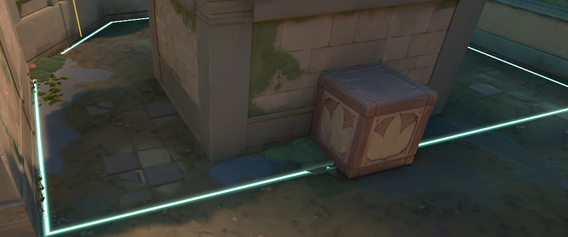
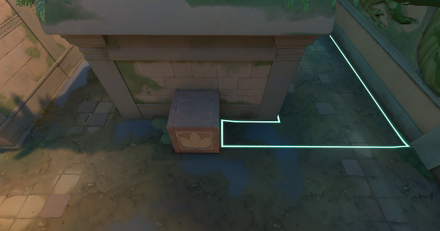

VALORANT Patch Notes 12.05

ALL PLATFORMS
GENERAL UPDATES
For 12.05, we’ll be putting our focus on supporting coordinated teamplay and increasing pick diversity across the
board. While we do think individual skill really shines when it comes to your gunplay and execution, we still
think strategy is best formed as a team and using Agents to work together.
So the Agent updates below are intended to take a little bit of power away from a couple Agents who are a bit too
selfish and strong on their own (like Clove and Yoru). Plus, we’re adding Miks to the roster, who’s basically
the ultimate wingman for his team. Well, aside from Wingman of course.
We’re also making some QoL updates to the killfeed to better show assisting abilities and Agents involved in
kills, adding assist banners to the bottom of your screen so you can more easily tell when you secured an
assist, and improving ally targeting for abilities like Sage’s Healing Orb and Miks’s Harmonize. All for the
sake of recognizing and encouraging good examples of teamplay.
AGENT UPDATES
Straight from Croatia, Miks takes the stage channeling pure sound energy. With his infectious passion and sonic
powers, he rallies his squad to move as one as they set the tempo on the battlefield together. Our newest
Controller will start rolling out to all regions at 10:00AM PST on 3/18.
- Miks
- Abilities:
- Harmonize
- EQUIP Harmonize. Target an ally and FIRE to activate a Combat Stim on yourself and the
ally that refreshes with each kill. ALT-FIRE to grant Combat Stim to yourself. - M-pulse
- EQUIP M-pulse. ALT-FIRE to toggle between Concuss and Healing outputs. FIRE to throw the
device. Upon landing, M-pulse sends out sound waves, either Concussing or Healing
players. - Waveform
- EQUIP a Map Targeter. FIRE to set locations. ALT-FIRE to spawn Smokes at selected
locations. - Bassquake
- EQUIP Bassquake. FIRE to build up and unleash Sonic Radiance forward, knocking back,
Deafening, and Slowing players.
- You can also learn more about Miks on his Agent page, as well as his gameplay trailer and Dev Diary on our
YouTube channel. - Sage
-
Healing Orb – Ally Targeting
- With the release of Miks, we have updated our Ally Targeting UI/UX and brought those updates to
Sage. You’ll see a new widget above the targeted allies head, and an additional highlight around
the agent’s model.
BEFORE

AFTER

+ Crystal Model Update
– We’ve added crystal growths to Sage’s model and key art to show the price she is paying for
repeatedly pushing the limits of her power. - With the release of Miks, we have updated our Ally Targeting UI/UX and brought those updates to
With the change to initiator utility cooldowns at the end of last year, we started reevaluating the removal of
Guiding’s Light recharge. At 45s, there was little downside to using this ability right at round start for soft
scouting – and we wanted her to be more intentional and deliberate in utility usage. At 60s, this tradeoff
became much sharper.
Yoru is crowding out the viability of flash Initiators and sometimes even Sentinels, especially in higher ranks
and Pro play. He has the strongest map-wide rotation ability on the roster, can take forward space extremely
well, and has one of the strongest general use flashes in the game. In general, we think Yoru is too strong and
is starting to bleed into other roles at the cost of comp diversity. So we’re adjusting his strongest abilities,
Gatecrash and Blindside, so that Yoru has to make more meaningful tradeoffs when he decides to use them.
- Yoru
- Gatecrash
- Duration beacon is active reduced 30s >> 15s
- Blindside
- Charges reduced from 2 >> 1.
Clove has been a consistently popular choice in ranked since launch and also has a significantly higher winrate than other agents.
Our hope is that with some adjustments to their power and the addition of Miks, there will be more options available in the Controller space.
These changes specifically target Clove’s ability to help their team win even after death.
- Clove
- Ruse
- Smoke duration 14s >> 6s (when casted while dead)
- Meddle
- Area of effect reduced 6m >> 4m
- Breach
GAMEPLAY SYSTEMS UPDATES
- Assist Banners
- Assists have always been a huge part of winning rounds, but they’ve never gotten the recognition they deserve. Now they do!
- When your utility or damage contributes to a teammate’s kill, you’ll see an assist banner on the bottom of your screen
- The banner shows your specific contribution to the elimination and is accompanied by an audio cue


- Killfeed Updates
- Your team’s killfeed now displays the assisting player’s agent icon and the ability or damage that set up the kill
- This info is visible to your team only

- Status Effect Tags
-
We’ve updated how and where status effects appear on your HUD to improve clarity and consistency. When
multiple effects are active, you can quickly see what’s affecting you and how long it lasts in
predictable areas of the screen, with buffs on the left and debuffs on the right for cleaner
organization during combat.BEFORE

AFTER

* Observers and spectators can now see Ability Map Targeters like Clove’s Ruse, Brim’s Sky Smoke, Tejo’s Guided
Salvo, etc. Ability Map Targeters will also show up in Replays.
MAP UPDATES
- Map Pool Updates
- LOTUS and FRACTURE are IN the Competitive and
Deathmatch queues. - ABYSS and CORRODE are OUT of Competitive and
Deathmatch queues.
*Overall we are happy where Lotus is at as a map in the pool. But as part of our effort across all maps to reduce
weapon spam when the barrier drops, we have changed some walls on A side of the map. We also have been seeing
consistent ability usage towards the A-lobby choke when barriers go down. We don’t want to stop this completely,
but feel moving the jump up to vines will give attackers a better chance to fight for rubble.
- Lotus
-
Attacker lobby wall thickened to remove wall penetration off barrier drop.
BEFORE

AFTER

+ Jump up to Vines moved to help attackers get out of Lobby and avoid utility dump.BEFORE

AFTER

+ Wall outside of Tree room has been reinforced to remove wall penetration.BEFORE

AFTER

+ Extra room added outside of A-site stairs to help hold A-site and let defenders play further back from
rubbleBEFORE

AFTER

+ The A-site plant zone has changed so you can no longer plant for breakable/link
BEFORE

AFTER

MODES UPDATES
- New Limited Time Mode
- Introducing Knockout, a round-based tactical elimination mode where every kill
resurrects a fallen teammate. Teams stage at a center-line and coordinate pushes into enemy territory
across escalating weapon stages to wipe each other out. Stick with your team, trade for each other, and
ride the momentum swings as your squad rebuilds kill after kill.- Mode Details
- Resurrection System
- Eliminating an enemy brings back a fallen teammate
- Resurrection delay scales with round length, from near-instant early in the
round to several seconds later on
- Team Territories
- A center-line barrier divides the map into team territories
- Capture orbs to shift the line toward the enemy, expanding your territory and
compressing theirs - Orbs also heal you and grant you an ultimate charge
- Crossing into enemy territory applies a debuff, forcing the pushing team to
coordinate their timing - “Threat Detected” notification alerts the enemy team when a player
crosses into your territory - Crossing into enemy territory also obfuscates your minimap, reducing
your ability to track enemy positions while in their territory
- Loadouts
- No economy – select your loadout each round
- Weapon offerings escalate through stages as the match progresses
- Round Structure
- 5v5 on TDM maps
- Rounds last 3 minutes
- Overtime respawns and healing are disabled and damage over time forces a
final fight - Eliminate all enemies to win the round
- First team to 4 rounds wins the match
- Agents & Abilities
- Standard agent select with TDM ability recharge rates
- Earn your ultimate with kills or orb captures
- Ultimate charge resets on death and at the start of each round
- Match Length
- Leaving Limited Time Modes
All Random One Site and Skirmish: 2v2 están saliendo. ¡Gracias por jugar!
SOLUCIONES DE ERROR
- Agentes
- Solucionado un error en el que una arma flotante podría aparecer brevemente cuando un efecto de supresión interrumpe el Thrash de Gekko, el Owl Drone de Sova o la Astral Form de Astra.
- Solucionado un error en el que el Interceptor de Veto detectaría un Spycam de Cypher oculto.
- Solucionado un error en el que el relicio de Harbor no brillaba al equipar Storm Surge en modo de una mano.
- Solucionado un error en el que recoger el arma de un jugador muerto causaría que se equipara automáticamente cuando este fuera resucitado.
- Solucionado un error en el que la pose de equipamiento de Sky Smoke de Brimstone mostraba VFX no deseados cuando se veía desde lejos.
- Solucionado un error en el que el Barrier Mesh de Deadlock podía usarse para flotar en el aire bloqueando completamente las tirolesas en el punto de spawn del atacante en Fracture
- General
- Solucionado múltiples problemas de localización en la pantalla del marcador de Fin de Juego (EOG).
- Solucionado un problema en el que el partido más reciente de un amigo no siempre se actualizaba en la vista de Carrera.
- Solucionado un problema en el que la barra de progreso podía superponerse con las pestañas superiores en la pestaña de Progreso del EOG.
- Solucionado un problema en el que el resaltado de enfoque podía retrasarse en la pantalla de la línea de tiempo del EOG.
SOLO PC
ACTUALIZACIONES PREMIER
- Welcome to Stage V26A2! The matches start on March 18.
- This Stage will run for six weeks of matches instead of the usual seven.
- Teams with a Premier Score of at least 500 qualify for Playoffs on April 26.
- In Contender and Invite, qualification is still based on your placement – check out the
standings page for more info
- In Contender and Invite, qualification is still based on your placement – check out the
- Your awards hub will temporarily display that you haven’t unlocked any rewards. This will be fixed in
patch 12.06.
COMPETITIVE UPDATES
- We’re adjusting the Ranked Rating thresholds to hit Immortal 2, 3 and Radiant to bring parity to leaderboard
requirements across all of our regions. - We’re not adjusting any of the underlying MMR systems, so we expect the same players to show up on the leaderboard.
- We made a QoL update to the new Rank summary screen that we implemented in patch 12.04.
- You can now access the Social Panel and select Play Now directly from that screen.
BUG FIXES
- Battlepass
- Fixed a bug that caused the scroll wheel to not work when navigating between the tiers on the battlepass and/or event pass.